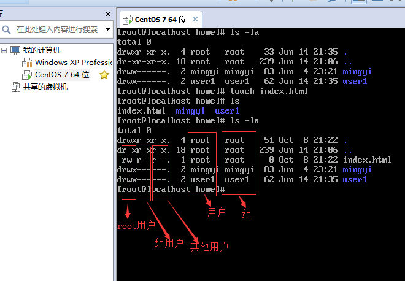
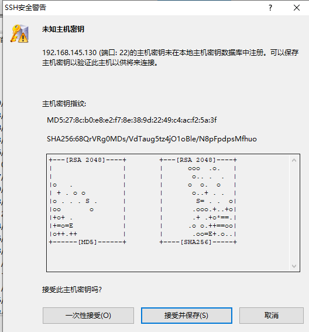

让防火墙 开发80端口
firewall-cmd --zone-public --add-port=80/tcp --permanent
Linux是操作系统：
Linux作为自由软件和开放源代码软件发展中最著名的例子，背靠社区与商业化的使用，使其得到了广泛的应用与发展。
Linux无处不在：
世界上500个最快的超级计算机90％以上运行Linux发行版或变种，包括最快的前10名超级计算机运行的都是基于Linux内核的操作系统。Linux也广泛应用在嵌入式系统上，如手机（Mobile Phone）、平板电脑（Tablet）、路由器（Router）、电视（TV）和电子游戏机等。在移动设备上广泛使用的Android操作系统就是创建在Linux内核之上。
学习Linux迫在眉睫：
本课程的主要目标：
前置准备【下面的方式任选其一】：
版本准备：linux操作系统(Centos 7.6)
可选：准备一个域名
Fedora是基于RHEL，CentOS，Scientific Linux, 和Oracle Linux的社区版本。相比RHEL，Fedora打包了显著的更多的软件包。其中一个原因是，多样化的社区参与Fedora的建设，它不只是一家公司。在这个过程中，CentOS用于活动，演示和实验，因为它是对最终用户免费提供的，并具有比Fedora的一个更长的发布周期(通常每隔半年左右发布一个新版本)。
Debian是包括Ubuntu在内许多发行版的上游，而Ubuntu又是Linux Mint及其他发行版的上游。Debian在服务器和桌面电脑领域都有着广泛的应用。Debian是一个纯开源计划并着重在一个关键点上，稳定性。它同时也提供了最大的和完整的软件仓库给用户。
Linux的发行版本可以大体分为两类，一类是商业公司维护的发行版本，如：著名的Redhat(RHEL)，一类是社区组织维护的发行版本，如：Debian。下面介绍一下各个发行版本的特点：
Redhat，应该称为Redhat系列，包括RHEL(Redhat Enterprise Linux，也就是所谓的Redhat Advance Server，收费版本)、Fedora Core(由原来的Redhat桌面版本发展而来，免费版本)、CentOS(RHEL的社区克隆版本，免费)。
包管理方式：采用的是基于rpm包的yum包管理方式。
Debian是社区类Linux的典范，是迄今为止最遵循GNU规范 的Linux系统。Debian最早由Ian Murdock于1993年创建，分为三个版本分支(branch)： stable, testing 和 unstable。其中，unstable为最新的测试版本，其中包括最新的软件包，但是也有相对较多的bug，适合桌面用户。testing的版本都经 过unstable中的测试，相对较为稳定，也支持了不少新技术(比如SMP等)。而stable一般只用于服务器，上面的软件包大部分都比较过时，但是稳定和安全性都非常的高。
包管理方式：采用的是基于是apt-get、dpkg包管理方式。
Ubuntu严格来说不能算一个独立的发行版本，Ubuntu是基于Debian的unstable版本加强而来，可以这么说，Ubuntu就是 一个拥有Debian所有的优点，以及自己所加强的优点的近乎完美的 Linux桌面系统。根据选择的桌面系统不同，有三个版本可供选择，基于Gnome的Ubuntu，基于KDE的Kubuntu以及基于Xfc的 Xubuntu。特点是界面非常友好，容易上手，对硬件的支持非常全面，是最适合做桌面系统的Linux发行版本。
包管理方式：采用的是基于是apt-get、dpkg包管理方式。
总结对比一下：
| 分类 | Centos | Debian | Ubuntu |
|---|---|---|---|
| 包管理 | yum | apt-get | apt-get |
| 桌面应用 | 支持 | 需要另装 | 支持 |
| 系统资源占用 | 小 | 非常小 | 大 |
| 资料 | 最多 | 依赖社区 | 多 |
| 更新频次 | 长达10年 | 1-2年 | 3-5年 |
| 软件资源 | 较新 | 最新 | 新 |
| 漏洞更新 | 慢 | 依赖社区 | 依赖社区 |
| 默认安装 | 非常全 | 无 | 非常全 |
| 稳定性 | 较稳定 | 稳定 | 相对稳定 |
| 系统操作要求 | 较高 | 高 | 低 |
| 维护要求 | 低 | 高 | 较高 |
| 易用性 | 一般 | 差 | 较好 |
| 定制化 | 一般 | 高 | 差 |
CentOS是RHEL发行版对应的开源版本，通常在RedHat的发布后就会很快发行。它既稳定，占用资源又少，在网络上能方便搜索到安装配置的文档，自身的帮助文档也非常强大。所以，新人学习推荐：Centos
本课程，后续的操作与演示，将会使用Centos 7.6 64-bit版本进行演示
参考资料：Linux发行版及年份
下面我们Linux与Windows作一个对比：
这里Linux是免费的版本，如Centos, Ubuntu，而Windows则是Windows10/8/7
| 分类 | Linux | Windows |
|---|---|---|
| 费用 | 免费 | 付费 |
| 软件支持 | 社区，免费 | 官方支持，收费 |
| 安全性 | 很安全 | 各种漏洞 |
| 使用习惯 | 命令行与界面操作，需要学习 | 图形界面操作，简单 |
| 可定制性 | 高 | 低 |
| 应用范畴 | 服务器 | 工作、娱乐 |
| 更新 | 依赖社区 | 官方更新 |
| 系统内核 | 透明 | 封闭 |
Linux的优势：
Windows的优势：
这里我们选择几款比较有代表性的桌面进行简单的介绍：
GNOME[官方地址]

centos6.x 上默认是gnome2，7.x默认gnome3

上图为：GNOME3
KDE [官方地址]

上图为：Plasma 5.12 LTS
Unity

Unity是Canonical公司为GNOME桌面环境所开发的图形用户界面，用于Ubuntu操作系统。
直到Ubuntu16.04LTS，使用的都是Unity，从 Ubuntu 18.04 LTS 开始，默认的 Ubuntu 桌面将重归 GNOME。人事调整，与钱的问题….有兴趣的同学可以看这里
我们来看看Google Trends
参考资料：
Nginx、ApacheVim，Nano，Atom，VScode，IntelliJ IDEA&WebstormAria2、uGet(Ubuntu/Debian)、XDM、qBittorrentgit、rsync、sudo、unzip、tar下载镜像

按需选择下载：
| 类型 | DVD | Minimal |
| ---------- | -------------- | -------- |
| 图形安装 | 支持 | 支持 |
| 自带软件包 | 全家桶，可选择 | 无 |
| 镜像大小 | 4G+ | 800-900M |
制作U盘启动盘
Windows参考：Windows中制作USB启动盘
Mac/Linux参考：MacOS中制作USB启动盘
修改BIOS启动顺序，重启
安装配置。€
参考资料
常见问题：
操作步骤：
格式化U盘(FAT32格式)
下载ISO镜像

资源下载：
Centos官网推荐：
Ubuntu官网推荐：

格式化U盘

使用 diskutil list 查看U的设备名
$ diskutil list
/dev/disk0 (internal):
#: TYPE NAME SIZE IDENTIFIER
0: GUID_partition_scheme 500.3 GB disk0
1: EFI EFI 314.6 MB disk0s1
2: Apple_APFS Container disk1 500.0 GB disk0s2
/dev/disk1 (synthesized):
#: TYPE NAME SIZE IDENTIFIER
0: APFS Container Scheme - +500.0 GB disk1
Physical Store disk0s2
1: APFS Volume APPLE SSD 342.6 GB disk1s1
2: APFS Volume Preboot 47.6 MB disk1s2
3: APFS Volume Recovery 509.7 MB disk1s3
4: APFS Volume VM 4.3 GB disk1s4
/dev/disk2 (external, physical):
#: TYPE NAME SIZE IDENTIFIER
0: FDisk_partition_scheme *123.0 GB disk2
1: Windows_NTFS LIWEI 123.0 GB disk2s1
上图中，/dev/disk2就是U盘
卸载U盘(不是推出) : diskutil umountDisk /dev/disk2 (假如U盘是 /dev/disk2)
$ diskutil umountDisk /dev/disk2
Unmount of all volumes on disk1 was successful
镜像DMG写入到U盘: sudo dd if=~/Downloads/ubuntu-16.04-desktop-amd64.iso of=/dev/disk2 bs=1m (假如U盘是 /dev/disk1, 千万别搞错了)
$ sudo dd if=~/Downloads/ubuntu-17.04-desktop-amd64.iso of=/dev/disk2 bs=1m
Password:
2151+1 records in
2151+1 records out
2256076800 bytes transferred in 90.277905 secs (24990354 bytes/sec)
写入完成后会提示:“此电脑不能读取能插入的磁盘”, 这里选择直接推出即可

| 目录 | 说明 | 备注 |
|---|---|---|
| /bin | 常用二进制命令 | ls, cp, rm, mkdir |
| /usr | 系统程序目录 | 命令、帮助文件、系统配置 |
| /var | 这个目录中存放着在不断扩充着的东西 | 日志 |
| /lib | 系统最基本的动态连接共享库 | 类似于Windows中的DLL |
| /srv | 存放一些服务启动之后需要提取的数据 | 通常是空的 |
| /home | 用户主目录 | 通常是空的 |
| /boot | Linux内核及系统引导文件目录 | |
| /dev | 设备文件的目录 | 声卡，磁盘，光驱等 |
| /etc | 二进制软件包配置文件的默认路径 | 系统信息，网络配置 |
| /lost+found | 系统崩溃时，产生的一些碎片文件 | |
| /mnt | 临时挂载存储设备 | U盘 |
| /opt | 软件可选的安装目录 | 通常是空的 |
| /proc | 操作系统进程信息目录 | |
| /sbin | 管理员命令，系统级命令 | sudo用户 |
| /tmp | 临时文件目录 | 重启后，被清空 |
| /run | 临时文件系统，存储系统启动以来的信息 | 重启后，被清空 |
| /sys | 系统中的设备组织成层次结构 | 通过文件查看硬件信息 |
需要掌握的目录路径知识：
查看系统内核信息
# Centos
$ cat /proc/version
Linux version 3.10.0-957.10.1.el7.x86_64 (mockbuild@kbuilder.bsys.centos.org) (gcc version 4.8.5 20150623 (Red Hat 4.8.5-36) (GCC) ) #1 SMP Mon Mar 18 15:06:45 UTC 2019
# Ubuntu
$ cat /proc/version
Linux version 4.15.7-041507-generic (kernel@gloin) (gcc version 7.2.0 (Ubuntu 7.2.0-8ubuntu3.2)) #201802280530 SMP Wed Feb 28 10:31:47 UTC 2018
查看网络信息
# Centos DHCP
$ cat /etc/sysconfig/network-scripts/ifcfg-eth0
DEVICE=eth0
BOOTPROTO=dhcp
ONBOOT=yes
# 或者指定IP
$ cat /etc/sysconfig/network-scripts/ifcfg-em1
TYPE=Ethernet
PROXY_METHOD=none
BROWSER_ONLY=no
BOOTPROTO=none
DEFROUTE=yes
IPV4_FAILURE_FATAL=no
IPV6INIT=yes
IPV6_AUTOCONF=yes
IPV6_DEFROUTE=yes
IPV6_FAILURE_FATAL=no
IPV6_ADDR_GEN_MODE=stable-privacy
NAME=em1
UUID=fa335568-27db-47fd-a055-424173c42430
DEVICE=em1
ONBOOT=yes
IPADDR=192.168.4.252
PREFIX=24
GATEWAY=192.168.4.50
DNS1=192.168.4.50
IPV6_PRIVACY=no
ZONE=public
# Ubuntu
$ vi /etc/network/interfaces
# This file describes the network interfaces available on your system
# and how to activate them. For more information, see interfaces(5).
source /etc/network/interfaces.d/*
# The loopback network interface
auto lo
iface lo inet loopback
# The primary network interface
auto ens3
iface ens3 inet static
address 192.168.4.60
netmask 255.255.255.0
network 192.168.4.0
broadcast 192.168.4.255
gateway 192.168.4.50
# dns-* options are implemented by the resolvconf package, if installed
dns-nameservers 192.168.4.50
dns-search itheima
通常使用ifconfig来查看网卡的信息
DNS配置
$ cat /etc/resolv.conf
options timeout:2 attempts:3 rotate single-request-reopen
; generated by /usr/sbin/dhclient-script
nameserver 100.100.2.136
nameserver 100.100.2.138
host文件
$ cat /etc/hosts
127.0.0.1 localhost localhost.localdomain localhost4 localhost4.localdomain4
::1 localhost localhost.localdomain localhost6 localhost6.localdomain6
用户/组
查看用户：
$ cat /etc/passwd
root:x:0:0:root:/root:/bin/bash
daemon:x:1:1:daemon:/usr/sbin:/usr/sbin/nologin
bin:x:2:2:bin:/bin:/usr/sbin/nologin
sys:x:3:3:sys:/dev:/usr/sbin/nologin
sync:x:4:65534:sync:/bin:/bin/sync
games:x:5:60:games:/usr/games:/usr/sbin/nologin
man:x:6:12:man:/var/cache/man:/usr/sbin/nologin
lp:x:7:7:lp:/var/spool/lpd:/usr/sbin/nologin
....
查看组：
$ cat /etc/group
root:x:0:
daemon:x:1:
bin:x:2:
sys:x:3:
adm:x:4:syslog,bttech
tty:x:5:
disk:x:6:
lp:x:7:
mail:x:8:
news:x:9:
uucp:x:10:
man:x:12:
proxy:x:13:
....
查看内存/CPU
# 查看CPU
$ cat /proc/cpuinfo
processor : 0
vendor_id : GenuineIntel
cpu family : 6
model : 45
model name : Intel(R) Xeon(R) CPU E5-2670 0 @ 2.60GHz
stepping : 7
microcode : 0x714
cpu MHz : 2117.419
cache size : 20480 KB
...
# 查看内存
$ cat /proc/meminfo
MemTotal: 131812048 kB
MemFree: 460820 kB
MemAvailable: 36657836 kB
Buffers: 0 kB
Cached: 34910784 kB
SwapCached: 1051944 kB
Active: 95183532 kB
Inactive: 32382012 kB
Active(anon): 77764844 kB
Inactive(anon): 15015220 kB
Active(file): 17418688 kB
...
其他
Linux启动过程：
内核的引导
首先是BIOS开机自检，按照BIOS中设置的启动设备（通常是硬盘）来启动。
主要是一些驱动、基本的操作指令，用来接管所有的硬件
运行 init
就跟main函数一样，有一个起点，初始一个服务进程daemon，跟windows中的服务一样。
系统初始化
用户及软件服务自启动
建立终端
Linux的多用户管理。
针对对用户，登录方式有三种：
用户登录系统

目录相关
ls: 列出目录
-la 可以查看隐藏文件，文件一些基础属性
cd：切换目录
使用绝对路径/，也可以使用./相对路径，回到上级目录cd ..
pwd：显示目前的目录
mkdir：创建一个新的目录
rmdir：删除一个空的目录
cp: 复制文件或目录
cp source target
rm: 移除文件或目录
# 删除目录
rm -r dirpath
# 强制删除，要特别注意
rm -rf dirpath€
mv: 移动文件与目录，或修改文件与目录的名称
mv source target
cat用来查看文件内的内容，touch命令来创建文件，echo命令往文件里面写入内容，more命令来查看显示长文件内容
基本属性：
权限管理chmod
文件基本属性分为10个字符 drwxrwxrwx
r 代表着read读权限
w代表着write写权限
x代表着execute执行权限
d代表着目录
chmod -R递归执行，相当于是把目录下所有的文件都修改对应的权限
chmod +x 给文件一个执行/读/写权限
修改权限的两种方式：
**方式1： 数字方式**
`7`-`rwx`
`6`-`-rw-`
`4`-`r--`
`0`-`---` 什么权限都没有，
前面的3个是所有者用户的权限，
中间的3个是组用户的权限，
后面的3个是其他用户的权限。
举例说明：
```bash
# 对所属用户有读写权限
chmod 600 ...
# 对应 -rwxrw-rw-，相当于是取消了组与其他用户的执行权限
chmod 755 ...
```
**方式2：**
`a`代表all所有，`u`代表user，`g`代表group，`o`代表other。
`+`代表增加，`-`代表减少
举例说明：
```bash
# 增加所有用户的读的权限
chmod a+r ...
# 增加用户与组的写的权限
chmod ug+w ..
```
> 个人比较推荐数字的方式，比较好记！！
用户/组权限管理chown
修改文件/文档所属/所属组
chown <所属用户>:<所属组> <文件>
目录：
chown -R <所属用户>:<所属组> <文件>
-R 代表着递归

lsb_release -ayum install -y redhat-lsbcat proc/ versioncd etc/ sshvi ssh_configuseradduserdelpasswdgroupadd/groupdel/groupmod（扩展） 向itcast 组中添加用户user3 usermod -a -G itcast user3
远程连接ssh
配置文件的路径是在/etc/ssh/sshd_config目录下
如果需要修改port：
sshd_config中的Port参数semanage port -a -t ssh_port_t -p tcp <Port>service sshd restart (Centos) / service ssh restart (Debian、Ubuntu)在测试的时候，可以关闭服务器的防火墙，但是生产系统中不推荐这么去做。
如果提示没有semanage这个命令，则可以使用如下方式来安装：
sudo yum install -y policecoreutils-python或者使用
yum whatprovides semange来反查
ssh登录命令的格式：ssh -p Port <用户名>@<服务器的地址>
如：
$ ssh -p 10022 root@192.168.0.1
window推荐使用xftp终端
>
mac推荐使用iterm

查看网卡配置ifconfig
如果说没有这个命令，可以使用yum install net-tools进行安装
ifconfig eth0 <ip> netmask 255.255.255.0
对网口进行禁用/启用
ifconfig eth0 down/up
查看网络netstat
-t：列出TCP协议端口-u：列出UDP协议端口-n:不使用域名与服务名，而使用IP地址和端口号-l：仅列出在监听状态网络服务-a：列出所有的网络连接-p：列出所对应的进程信息netstat -anpl | grep ssh
当使用netstat | more进行滚屏，ctrl+f/b进行翻上/下页
路由命令route
route查看路由
# add/del添加删除路由
route add -net 192.168.0.0 netmask 255.255.0.0 dev etho
# del删除
route del -net 192.168.0.0 netmask 255.255.0.0
# reject
route add -net 192.168.0.0 netmask 255.255.0.0 reject
IP命令ip
ip addr show
ip route show
ip link set eth0 up/down
ip <命令> help去查看命令的一些参数
DNS解析：nslookup
Centos中如果没有该命令，可以使用如下的方式进行安装
sudo yum install bind-utils
查看本机IP
curl [链接]
几个网址也非常好记忆
GUI网络配置操作（图形化大法好啊）：
nmtui
如果提示
not found命令的话，可以yum install -y NetworkManager-tui进行安装

性能测试
Bench.sh:
使用方法：
wget -qO- bench.sh | bash
# 或者
curl -Lso- bench.sh | bash
Github地址：https://github.com/teddysun/across/blob/master/bench.sh
LemonBench
使用方法：
wget -qO- https://ilemonrain.com/download/shell/LemonBench.sh | bash
# 或者
curl -fsSL https://ilemonrain.com/download/shell/LemonBench.sh | bash
nginx [发音：engine x]是一个HTTP和反向代理服务器，一个邮件代理服务器和一个通用的TCP / UDP代理服务器，最初由Igor Sysoev编写。
据Netcraft称，nginx 在2019年5月服务或代理了 26.43％最繁忙的网站。以下是一些成功案例： Dropbox， Netflix， Wordpress.com， FastMail.FM。
nginx [engine x] is an HTTP and reverse proxy server, a mail proxy server, and a generic TCP/UDP proxy server, originally written by Igor Sysoev. For a long time, it has been running on many heavily loaded Russian sites including Yandex, Mail.Ru, VK, and Rambler. According to Netcraft, nginx served or proxied 26.43% busiest sites in May 2019. Here are some of the success stories: Dropbox, Netflix,Wordpress.com, FastMail.FM.
从下面的当下技术架构图中，可以看出Nginx在网络中的位置与重要性。Nginx的轻量级、内存占用少、启动极快，高并发能力强的特性，使它在互联网项目中广泛应用。

Service-Oriented Architecture，SOA面向服务的架构
正向代理 ：

由于防火墙的原因，我们并不能直接访问谷歌，那么我们可以借助VPN来实现，这就是一个简单的正向代理的例子。这里你能够发现，正向代理“代理”的是客户端，而且客户端是知道目标的，而目标是不知道客户端是通过VPN访问的。
反向代理：

当我们在外网访问百度的时候，其实会进行一个转发，代理到内网去，这就是所谓的反向代理，即反向代理“代理”的是服务器端，而且这一个过程对于客户端而言是透明的。

Master进程的作用是读取并验证配置文件nginx.conf；管理worker进程；
Worker进程的作用:每一个Worker进程都维护一个线程（避免线程切换），处理连接和请求；
注意Worker进程的个数由配置文件决定，一般和CPU个数相关（有利于进程切换），配置几个就有几个Worker进程。
特点：
主进程Master
Nginx 启动时，会生成两种类型的 进程*，一个是 主进程（master），一个（windows 版本的目前只有一个）或 多个工作进程（worker）。主进程 并不处理网络请求，主要负责 调度工作进程，也就是图示的 3 项：加载配置、启动工作进程 及 非停升级。所以，Nginx 启动以后，查看操作系统的进程列表，我们就能看到 至少有两个 Nginx 进程。
工作进程Worker
服务器实际 处理网络请求 及 响应 的是 工作进程（worker），在类 unix 系统上，Nginx 可以配置 多个 worker，而每个 worker 进程 都可以同时处理 数以千计 的 网络请求。
模块化设计
标准HTTP模块、可选的HTTP模块(gzip等)、邮件服务、第三方(Lua)
Nginx 的 worker 进程，包括 核心 和 功能性模块，核心模块 负责维持一个 运行循环（run-loop），执行网络请求处理的 不同阶段 的模块功能，比如：网络读写、存储读写、内容传输、外出过滤，以及 将请求发往上游服务器 等。而其代码的 模块化设计，也使得我们可以根据需要对 功能模块 进行适当的 选择 和 修改，编译成具有 特定功能 的服务器。
事件驱动模型
基于 异步及非阻塞 的 事件驱动模型，可以说是 Nginx 得以获得 高并发、高性能 的关键因素，同时也得益于对 Linux、Solaris 及类 BSD 等操作系统内核中 事件通知 及 I/O 性能增强功能 的采用，如 kqueue、epoll 及 event ports。
代理设计
参考资料：

VRRP（Virtual Router Redundancy Protocol），即虚拟路由冗余协议。可以认为它是实现路由器高可用的容错协议，即将多台提供相同功能的路由器组成一个路由器组(Router Group)，这个组里面有一个master和多个backup，但在外界看来就像一台一样，构成虚拟路由器，拥有一个虚拟IP（vip，也就是路由器所在局域网内其他机器的默认路由），占有这个IP的master实际负责ARP相应和转发IP数据包，组中的其它路由器作为备份的角色处于待命状态。master会发组播消息，当backup在超时时间内收不到vrrp包时就认为master宕掉了，这时就需要根据VRRP的优先级来选举一个backup当master，保证路由器的高可用。
Keepalived是一个基于VRRP协议来实现的服务高可用方案，可以利用其来避免IP单点故障，类似的工具还有heartbeat、corosync、pacemaker。但是它一般不会单独出现，而是与其它负载均衡技术（如lvs、haproxy、nginx）一起工作来达到集群的高可用。
KeepAlived + Nginx来组成高可用的方案：
第一：请求不要直接打到Nginx上，应该先通过Keepalived（这就是所谓虚拟IP，VIP）
第二：Keepalived应该能监控Nginx的生命状态（提供一个用户自定义的脚本，定期检查Nginx进程状态，进行权重变化,，从而实现Nginx故障切换）
推荐使用在线安装方式：
| 分类 | yum方式 | 源码安装 |
|---|---|---|
| 网络 | 需要 | 可以不需要 |
| 安装位置 | /etc/nginx配置文件，/usr/sbin/nginx | /usr/local/nginx目录 |
| 管理命令 | 提供 | 不提供 |
| 启动 | service nginx start | 执行绝对路径/usr/local/nginx/sbin/nginx |
| 删除 | yum remove nginx或者rpm -e nginx | rm -rf /usr/local/nginx |
在线安装
添加nginx的repo：
$ vim /etc/yum.repos.d/nginx.repo
输入以下内容：
[nginx]
name=nginx repo
baseurl=http://nginx.org/packages/centos/$releasever/$basearch/
gpgcheck=0
enabled=1
:wq保存后，使用yum update，接下来就是安装了。
yum install -y nginx
# 管理命令:
# 启动/停止/重启
service nginx start/stop/restart
# 卸载
yum remove -y nginx
# 或者强制卸载，不考虑依赖
rpm -e nginx
源码安装
安装对应的依赖：
yum -y install gcc gcc-c++ make libtool zlib zlib-devel openssl openssl-devel pcre pcre-devel
下载源码包：
wget -O /tmp/nginx.tar.gz http://nginx.org/download/nginx-<version>.tar.gz
比如：
wget -O /tmp/nginx.tar.gz http://nginx.org/download/nginx-1.17.0.tar.gz
解压
cd /tmp/
tar zxvf nginx.tar.gz
编译
$ ./configure
Configuration summary
- using system PCRE library
- OpenSSL library is not used
- using system zlib library
nginx path prefix: "/usr/local/nginx"
nginx binary file: "/usr/local/nginx/sbin/nginx"
nginx modules path: "/usr/local/nginx/modules"
nginx configuration prefix: "/usr/local/nginx/conf"
nginx configuration file: "/usr/local/nginx/conf/nginx.conf"
nginx pid file: "/usr/local/nginx/logs/nginx.pid"
nginx error log file: "/usr/local/nginx/logs/error.log"
nginx http access log file: "/usr/local/nginx/logs/access.log"
nginx http client request body temporary files: "client_body_temp"
nginx http proxy temporary files: "proxy_temp"
nginx http fastcgi temporary files: "fastcgi_temp"
nginx http uwsgi temporary files: "uwsgi_temp"
nginx http scgi temporary files: "scgi_temp"
安装
make && make install
管理方法：
直接可以使用可执行文件进行启动/停止/重启
# 启动
/usr/local/nginx/sbin/nginx
# 停止
/usr/local/nginx/sbin/nginx -s stop
# 重启
/usr/local/nginx/sbin/nginx -s reload
管理脚本
$ vi /etc/init.d/nginx
输入如下内容:
#!/bin/sh
#
# nginx - this script starts and stops the nginx daemon
#
# chkconfig: - 85 15
# description: NGINX is an HTTP(S) server, HTTP(S) reverse \
# proxy and IMAP/POP3 proxy server
# processname: nginx
# config: /usr/local/nginx/conf/nginx.conf
# config: /etc/sysconfig/nginx
# pidfile: /usr/local/nginx/logs/nginx.pid
# Source function library.
. /etc/rc.d/init.d/functions
# Source networking configuration.
. /etc/sysconfig/network
# Check that networking is up.
[ "$NETWORKING" = "no" ] && exit 0
nginx="/usr/local/nginx/sbin/nginx"
prog=$(basename $nginx)
NGINX_CONF_FILE="/usr/local/nginx/conf/nginx.conf"
[ -f /etc/sysconfig/nginx ] && . /etc/sysconfig/nginx
lockfile=/var/lock/subsys/nginx
make_dirs() {
# make required directories
user=`$nginx -V 2>&1 | grep "configure arguments:" | sed 's/[^*]*--user=\([^ ]*\).*/\1/g' -`
if [ -z "`grep $user /etc/passwd`" ]; then
useradd -M -s /bin/nologin $user
fi
options=`$nginx -V 2>&1 | grep 'configure arguments:'`
for opt in $options; do
if [ `echo $opt | grep '.*-temp-path'` ]; then
value=`echo $opt | cut -d "=" -f 2`
if [ ! -d "$value" ]; then
# echo "creating" $value
mkdir -p $value && chown -R $user $value
fi
fi
done
}
start() {
[ -x $nginx ] || exit 5
[ -f $NGINX_CONF_FILE ] || exit 6
make_dirs
echo -n $"Starting $prog: "
daemon $nginx -c $NGINX_CONF_FILE
retval=$?
echo
[ $retval -eq 0 ] && touch $lockfile
return $retval
}
stop() {
echo -n $"Stopping $prog: "
killproc $prog -QUIT
retval=$?
echo
[ $retval -eq 0 ] && rm -f $lockfile
return $retval
}
restart() {
configtest || return $?
stop
sleep 1
start
}
reload() {
configtest || return $?
echo -n $"Reloading $prog: "
killproc $nginx -HUP
RETVAL=$?
echo
}
force_reload() {
restart
}
configtest() {
$nginx -t -c $NGINX_CONF_FILE
}
rh_status() {
status $prog
}
rh_status_q() {
rh_status >/dev/null 2>&1
}
case "$1" in
start)
rh_status_q && exit 0
$1
;;
stop)
rh_status_q || exit 0
$1
;;
restart|configtest)
$1
;;
reload)
rh_status_q || exit 7
$1
;;
force-reload)
force_reload
;;
status)
rh_status
;;
condrestart|try-restart)
rh_status_q || exit 0
;;
*)
echo $"Usage: $0 {start|stop|status|restart|condrestart|try-restart|reload|force-reload|configtest}"
exit 2
esac
添加开机启动：
# 给予执行权限
chmod a+x /etc/init.d/nginx
# 设置开机启动
chkconfig nginx on
# 启动
systemctl start nginx
在线方式
sudo apt-get install nginx
源码方式
安装依赖
# 安装gcc g++
sudo apt-get install build-essential
sudo apt-get install libtool
# 安装pcre依赖库（http://www.pcre.org/）
sudo apt-get update
sudo apt-get install libpcre3 libpcre3-dev
# 安装zlib依赖库（http://www.zlib.net）
sudo apt-get install zlib1g-dev
# 安装SSL依赖库（16.04默认已经安装了）
sudo apt-get install openssl
下载源码启动:
# 下载最新版本：
# 下面的version可以改为对应的版本
# http://nginx.org/download/nginx-1.17.0.tar.gz
wget -O /tmp/nginx.tar.gz http://nginx.org/download/nginx-<version>.tar.gz
# 解压：
cd /tmp/
tar -zxvf nginx.tar.gz
# 进入解压目录：
cd nginx-1.13.6
# 配置：
./configure --prefix=/usr/local/nginx
# 编译：
make
# 安装：
sudo make install
# 启动：
#注意：-c 指定配置文件的路径，不加的话，nginx会自动加载默认路径的配置文件，可以通过-h查看帮助命令。
#查看进程：
sudo /usr/local/nginx/sbin/nginx -c /usr/local/nginx/conf/nginx.conf
# 查看进程启动状态
ps -ef | grep nginx
... #全局块
events { #events块
...
}
http #http块
{
... #http全局块--start
server #server块
{
... #server全局块
location [PATTERN] #location块
{
...
}
location [PATTERN]
{
...
}
}
server
{
...
}
... #http全局块--end
}
配置优化
配置文件：
```bash
user www-data;
pid /run/nginx.pid;
worker_processes 4;
worker_cpu_affinity 0001 0010 0100 1000;
worker_rlimit_nofile 65535;
events {
# 设置事件驱动模型，是内核2.6以上支持
use epoll;
worker_connections 65535;
accept_mutex off;
multi_accept off;
}
http {
##
# Basic Settings
##
sendfile on;
tcp_nopush on;
tcp_nodelay on;
keepalive_timeout 60 50;
send_timeout 10s;
types_hash_max_size 2048;
client_header_buffer_size 4k;
client_max_body_size 8m;
include /etc/nginx/mime.types;
default_type application/octet-stream;
##
# Logging Settings
##
access_log /var/log/nginx/access.log;
error_log /var/log/nginx/error.log;
##
# Gzip Settings
##
gzip on;
gzip_disable "msie6";
gzip_min_length 1024;
gzip_vary on;
gzip_comp_level 2;
gzip_buffers 32 4k;
gzip_types text/plain text/css application/json application/x-javascript text/xml application/xml application/xml+rss text/javascript;
##
# Virtual Host Configs
##
include /etc/nginx/conf.d/*.conf;
include /etc/nginx/sites-enabled/*;
}
nginxs配置说明：
- `worker_connections`
设置一个进程理论允许的最大连接数，理论上越大越好，但不可以超过worker_rlimit_nofile的值。还有个问题，linux系统中有个指令open file resource limit，它设置了进程可以打开的文件句柄数量，可以用下面的指令查看你的linux系统中open file resource limit指令的值，`cat /proc/sys/fs/file-max`
可以将该指令设置为23900251
```bash
echo "2390251" > /proc/sys/fs/file-max
sysctl -p
压测工具Apache ab
我们要测试 nginx 的负载能力，需要借助压力测试工具。本博客是使用 Apache 服务器自带的一个 web 压力测试工具 ApacheBench ，简称 ab。ab 是一个命令行工具，即通过 ab 命令行，模拟多个请求同时对某一 URL 地址进行访问，因此可以用来测试目标服务器的负载压力。
yum -y install httpd-tools
# 查看安装结果
ab -V
# 简单的使用
# -c：一次并发请求的数量；-n：请求总次数
ab -c 5000 -n 200000 http://10.211.55.6：80/index.html
其他优化
net.ipv4.ip_forward = 0
net.ipv4.conf.default.rp_filter = 1
net.ipv4.conf.default.accept_source_route = 0
kernel.sysrq = 0
kernel.core_uses_pid = 1
# 开启SYN Cookies，当出现SYN等待队列溢出时，启用cookies来处理。
net.ipv4.tcp_syncookies = 1
kernel.msgmnb = 65536
kernel.msgmax = 65536
kernel.shmmax = 68719476736
kernel.shmall = 4294967296
# timewait的数量，默认是180000
net.ipv4.tcp_max_tw_buckets = 6000
net.ipv4.tcp_sack = 1
net.ipv4.tcp_window_scaling = 1
net.ipv4.tcp_rmem = 4096 87380 4194304
net.ipv4.tcp_wmem = 4096 16384 4194304
net.core.wmem_default = 8388608
net.core.rmem_default = 8388608
net.core.rmem_max = 16777216
net.core.wmem_max = 16777216
# # 每个网络接口接收数据包的速率比内核处理这些包的速率快时，允许送到队列的数据包的最大数目。
net.core.netdev_max_backlog = 262144
# web应用中listen函数的backlog默认会给我们内核参数的net.core.somaxconn限制到128，而nginx定义 的NGX_LISTEN_BACKLOG默认为511，所以有必要调整这个值
net.core.somaxconn = 262144
# 系统中最多有多少个TCP套接字不被关联到任何一个用户文件句柄上。如果超过这个数字，孤儿连接将即刻被复位并打印出警告信息。这个限制仅仅 是为了防止简单的DoS攻击，不能过分依靠它或者人为地减小这个值，更应该增加这个值(如果增加了内存之后)。
net.ipv4.tcp_max_orphans = 3276800
# 记录的那些尚未收到客户端确认信息的连接请求的最大值。对于有128M内存的系统而言，缺省值是1024，小内存的系统则是128。
net.ipv4.tcp_max_syn_backlog = 262144
# 时间戳可以避免序列号的卷绕。一个1Gbps的链路肯定会遇到以前用过的序列号。时间戳能够让内核接受这种“异常”的数据包。这里需要将其关掉。
net.ipv4.tcp_timestamps = 0
# 为了打开对端的连接，内核需要发送一个SYN并附带一个回应前面一个SYN的ACK。也就是所谓三次握手中的第二次握手。这个设置决定了内核放弃连接之前发送SYN+ACK包的数量。
net.ipv4.tcp_synack_retries = 1
# 在内核放弃建立连接之前发送SYN包的数量。
net.ipv4.tcp_syn_retries = 1
# 启用timewait快速回收
net.ipv4.tcp_tw_recycle = 1
# 开启重用。允许将TIME-WAIT sockets重新用于新的TCP连接。
net.ipv4.tcp_tw_reuse = 1
net.ipv4.tcp_mem = 94500000 915000000 927000000
# 如果套接字由本端要求关闭，这个参数决定了它保持在FIN-WAIT-2状态的时间。对端可以出错并永远不关闭连接，甚至意外当机。缺省值是60秒。 2.2 内核的通常值是180秒，你可以按这个设置，但要记住的是，即使你的机器是一个轻载的WEB服务器，也有因为大量的死套接字而内存溢出的风险，FIN- WAIT-2的危险性比FIN-WAIT-1要小，因为它最多只能吃掉1.5K内存，但是它们的生存期长些。
net.ipv4.tcp_fin_timeout = 1
# 当keepalive起用的时候，TCP发送keepalive消息的频度。缺省是2小时
net.ipv4.tcp_keepalive_time = 30
# 允许系统打开的端口范围
net.ipv4.ip_local_port_range = 1024 65000
超文本传输协议（英语：HyperText Transfer Protocol，缩写：HTTP）是一种用于分布式、协作式和超媒体信息系统的应用层协议，HTTP是万维网的数据通信的基础。

请求信息包括：请求行、请求头、空行还有其他消息体

HTTP的特点：
客户端&服务端
简单(路径+方法+传递的类型)
客户向服务器请求服务时，只需传送请求方法和路径。请求方法常用的有GET、HEAD、POST。每种方法规定了客户与服务器联系的类型不同。由于HTTP协议简单，使得HTTP服务器的程序规模小，因而通信速度很快。
灵活
HTTP允许传输任意类型的数据对象。正在传输的类型由Content-Type（Content-Type是HTTP包中用来表示内容类型的标识）加以标记。
无连接
无连接的含义是限制每次连接只处理一个请求。服务器处理完客户的请求，并收到客户的应答后，即断开连接。采用这种方式可以节省传输时间。
无状态有会话
HTTP协议是无状态协议，无状态是指协议对于事务处理没有记忆能力。
缺少状态意味着如果后续处理需要前面的信息，则它必须重传，这样可能导致每次连接传送的数据量增大。另一方面，在服务器不需要先前信息时它的应答就较快。
注意，HTTP本质是无状态的，使用Cookies可以创建有状态的会话。
HTTP 的不足之处
HTTPS协议：
超文本传输安全协议（英语：HyperText Transfer Protocol Secure，缩写：HTTPS；常称为HTTP over TLS、HTTP over SSL或HTTP Secure）是一种通过计算机网络进行安全通信的传输协议。HTTPS经由HTTP进行通信，但利用SSL/TLS来加密数据包。HTTPS开发的主要目的，是提供对网站服务器的身份认证，保护交换数据的隐私与完整性。这个协议由网景公司（Netscape）在1994年首次提出，随后扩展到互联网上。
主要作用：在不安全的网络上创建一个安全信道。
认证方式：数字证书
认证机构：数字证书认证机构（Certificate Authority CA），EV SSL（Extended Validation SSL Certificate）证书，OpenSSL自认证。
证书信任方式：
SSL握手过程：

Let's Encrypt组织介绍

acme来自动化申请
https://github.com/Neilpang/acme.sh
前提：需要域名
前置条件：
域名, 配置DNS解析，支持列表见下方
有公网IP的服务器(可选)
安装nginx, acme.sh
配置过程：
安装nginx与acme.sh
安装很简单, 一个命令:
curl https://get.acme.sh | sh
普通用户和 root 用户都可以安装使用. 安装过程进行了以下几步:
把 acme.sh 安装到你的 home 目录下:
~/.acme.sh/并创建 一个 bash 的 alias, 方便你的使用:
alias acme.sh=~/.acme.sh/acme.sh自动为你创建 cronjob, 每天 0:00 点自动检测所有的证书, 如果快过期了, 需要更新, 则会自动更新证书
使用source命令，使上面的安装生效
source ~/.bashrc
两种方式，激活SSL证书(推荐DNS)
http 方式
需要在你的网站根目录下放置一个文件, 来验证你的域名所有权,完成验证. 然后就可以生成证书了
acme.sh --issue -d mydomain.com -d www.mydomain.com --webroot /home/wwwroot/mydomain.com/
只需要指定域名, 并指定域名所在的网站根目录. acme.sh 会全自动的生成验证文件, 并放到网站的根目录, 然后自动完成验证. 最后会聪明的删除验证文件. 整个过程没有任何副作用.
如果你用的 apache服务器, acme.sh 还可以智能的从 apache的配置中自动完成验证, 你不需要指定网站根目录:
acme.sh --issue -d mydomain.com --apache
如果你用的 nginx服务器, 或者反代, acme.sh 还可以智能的从 nginx的配置中自动完成验证, 你不需要指定网站根目录:
acme.sh --issue -d mydomain.com --nginx
dns 方式(推荐)
在域名上添加一条 txt 解析记录, 验证域名所有权。
这种方式的好处是, 你不需要任何服务器, 不需要任何公网 ip, 只需要 dns 的解析记录即可完成验证. 坏处是，如果不同时配置 Automatic DNS API，使用这种方式 acme.sh 将无法自动更新证书，每次都需要手动再次重新解析验证域名所有权。
acme.sh --issue --dns -d mydomain.com
然后, acme.sh 会生成相应的解析记录显示出来, 你只需要在你的域名管理面板中添加这条 txt 记录即可.
等待解析完成之后, 重新生成证书:
acme.sh --renew -d mydomain.com
注意第二次这里用的是 --renew
dns 方式的真正强大之处在于可以使用域名解析商提供的 api 自动添加 txt 记录完成验证.
acme.sh 目前支持 cloudflare, dnspod, cloudxns, godaddy 以及 ovh 等数十种解析商的自动集成.
以 dnspod 为例, 你需要先登录到 dnspod 账号, 生成你的 api id 和 api key, 都是免费的. 然后:
export DP_Id="1234"
export DP_Key="sADDsdasdgdsf"
acme.sh --issue --dns dns_dp -d aa.com -d www.aa.com
证书就会自动生成了. 这里给出的 api id 和 api key 会被自动记录下来, 将来你在使用 dnspod api 的时候, 就不需要再次指定了. 直接生成就好了:
acme.sh --issue -d mydomain2.com --dns dns_dp
配置nginx配置，设置定时任务
生成dhparam.pem
$ openssl dhparam -out dhparam.pem 2048
nginx中正确的使用方法是使用 --installcert 命令,并指定目标位置, 然后证书文件会被copy到相应的位置, 例如:
acme.sh --installcert -d <domain>.com \
--key-file /etc/nginx/ssl/<domain>.key \
--fullchain-file /etc/nginx/ssl/fullchain.cer \
--reloadcmd "service nginx force-reload"
配置文件：
# server部分
ssl_protocols TLSv1 TLSv1.1 TLSv1.2;
ssl_prefer_server_ciphers on;
ssl on;
ssl_certificate /etc/nginx/ssl/fullchain.cer;
ssl_certificate_key /etc/nginx/ssl/<domain>.key;
# ssl_dhparam
ssl_dhparam /etc/nginx/ssl/dhparam.pem;
对网站的SSL进行检验
其他需要注意的地方：
虚拟化：在计算机技术中，虚拟化（技术）或虚拟技术（英语：Virtualization）是一种资源管理技术，是将计算机的各种实体资源（CPU、内存、磁盘空间、网络适配器等），予以抽象、转换后呈现出来并可供分区、组合为一个或多个电脑配置环境。

主要的目的：降低成本，提高应用兼容性，提高服务可用性，提升资源复用率。
虚拟化分类：
主要有全虚拟化和半虚拟化。
典型的全虚拟化软件有 —— VMWare、Hyper-V、KVM-x86(复杂指令集)。
典型的半虚拟化软件有——Xen、KVM-PowerPC(简易指令集）
参考资料：虚拟化的发展历程和实现原理——图文详解，虚拟化类型
从硬件
使用阿里云的工具进行筛选，需要登录，链接：ECS 实例规格可购买地域总览

从网络

云服务器 ECS 的入网带宽和出网带宽皆以服务器角度出发。下表给出了入网带宽和出网带宽的具体内容：
| 带宽类别 （Mbit/s） | 描述 |
|---|---|
| 入网带宽 | 流入云服务器 ECS 的带宽 从云服务器 ECS 内部下载外部网络资源，或者从客户端 FTP 等方式上传资源到云服务器 ECS 都是入网带宽。 |
| 出网带宽 | 流出云服务器 ECS 的带宽 从云服务器 ECS 对外提供访问，或者从客户端 FTP 等方式下载云服务器 ECS 内部资源都是出网带宽，云服务器 ECS 出网带宽就是购买的带宽值。 |
推荐公司使用固定带宽，对于测试用户或者流量比较小的用户使用按量计费带宽。
举例应用场景：公司网站展示类型(按量计费)，视频(固定带宽)
后期还可以购买CDN加速，分担静态资源的流量。
从地域
每个地域完全独立。每个可用区完全隔离，但同一个地域内的可用区之间使用低时延链路相连。地域和可用区之间的关系如下图所示。

中国大陆
一般情况下建议选择和您目标用户所在地域最为接近的数据中心，可以进一步提升用户访问速度。不过，在基础设施、BGP 网络品质、服务质量、云服务器操作使用与配置等方面，阿里云中国大陆地域没有太大区别。BGP 网络可以保证中国大陆全部地域的快速访问。
其他国家及地区
其他国家及地区提供国际带宽，主要面向非中国大陆地区用户。如果您在中国大陆，使用这些地域会有较长的访问延迟，不建议您使用。
从费用
基本概念
阿里云系产品：云数据库RDS（ApsaraDB for RDS，简称RDS）是一种稳定可靠、可弹性伸缩的在线数据库服务。基于飞天分布式系统和全SSD盘高性能存储，支持MySQL、SQL Server、PostgreSQL和PPAS（高度兼容Oracle)引擎，默认部署主备架构且提供了容灾、备份、恢复、监控、迁移等方面的全套解决方案，彻底解决数据库运维的烦恼！
亚马逊系产品：Amazon Relational Database Service (Amazon RDS) 让您能够在云中轻松设置、操作和扩展关系数据库。它在自动执行耗时的管理任务（如硬件预置、数据库设置、修补和备份）的同时，可提供经济实用的可调容量。这使您能够腾出时间专注于应用程序，为它们提供所需的快速性能、高可用性、安全性和兼容性。
Amazon RDS 在多种类型的数据库实例（针对内存、性能或 I/O 进行了优化的实例）上均可用，并提供六种常用的数据库引擎供您选择，包括 Amazon Aurora、PostgreSQL、MySQL、MariaDB、Oracle Database 和 SQL Server。您可以使用 AWS Database Migration Service 轻松将您现有的数据库迁移或复制到 Amazon RDS。
特点：
| 类型 | 特点 |
| -------- | ----------------------------- |
| 轻松管理 | GUI页面，从部署到生产数据库 |
| 可扩展 | 修改CPU/内存/存储资源 |
| 高可用 | 自动备份、快照 、自动主机更换 |
| 速度快 | 可选SSD |
| 安全 | 可建立专网，或者连接到使用VPN |
| 经济 | 网络成本、运维成本都低 |
本课程中使用亚马逊的RDS作为演示
购买地址
阿里云：https://cn.aliyun.com/product/rds

亚马逊：https://aws.amazon.com/cn/rds/

操作面板介绍(以亚马逊为主)
负载均衡（Server Load Balancer）是对多台云服务器进行流量分发的负载均衡服务。负载均衡可以通过流量分发扩展应用系统对外的服务能力，通过消除单点故障提升应用系统的可用性。
负载均衡通过设置虚拟服务地址，将添加的ECS实例虚拟成一个高性能、高可用的应用服务池，并根据转发规则，将来自客户端的请求分发给云服务器池中的ECS实例。
负载均衡默认检查云服务器池中的ECS实例的健康状态，自动隔离异常状态的ECS实例，消除了单台ECS实例的单点故障，提高了应用的整体服务能力。此外，负载均衡还具备抗DDoS攻击的能力，增强了应用服务的防护能力。
基本的功能：
调度
负载均衡支持轮询、加权轮询（WRR）、加权最小连接数（WLC）和一致性哈希（CH）调度算法。
健康检查
负载均衡会检查后端服务器的运行状况。当探测到后端服务器运行状况不佳时，会停止向其发送流量，然后将流量转发给其他正常运行的后端服务器。
会话保持
负载均衡提供会话保持功能。在会话的生命周期内，可以将同一客户端的请求转发到同一台后端服务器上。
访问控制
高可用
负载均衡可以将流量转发给多个可用区的后端服务器。并且，负载均衡已经在大部分地域支持了多可用区部署，当主可用区出现故障时，负载均衡可自动切换到备可用区上提供服务。
业务场景二：

安全防护
结合云盾，可提供5Gbps的防DDoS攻击能力。
监控
证书管理
重定向
WS/WSS支持
HTTP/2支持
HTTP/2（Hypertext Transfer Protocol Version 2）是超文本传输协议的第二版，向下兼容HTTP1.X协议版本，同时带来性能的大幅提升。

A记录： 将域名指向一个IPv4地址（例如：100.100.100.100），需要增加A记录
CNAME记录： 如果将域名指向一个域名，实现与被指向域名相同的访问效果，需要增加CNAME记录。这个域名一般是主机服务商提供的一个域名
MX记录： 建立电子邮箱服务，将指向邮件服务器地址，需要设置MX记录。建立邮箱时，一般会根据邮箱服务商提供的MX记录填写此记录
NS记录： 域名解析服务器记录，如果要将子域名指定某个域名服务器来解析，需要设置NS记录
TXT记录： 可任意填写，可为空。一般做一些验证记录时会使用此项，如：做SPF（反垃圾邮件）记录
AAAA记录： 将主机名（或域名）指向一个IPv6地址（例如：ff03 0
0 0
0 0:c1），需要添加AAAA记录
0:c1），需要添加AAAA记录
SRV记录： 添加服务记录服务器服务记录时会添加此项，SRV记录了哪台计算机提供了哪个服务。格式为：服务的名字.协议的类型（例如：_example-server._tcp）。
SOA记录： SOA叫做起始授权机构记录，NS用于标识多台域名解析服务器，SOA记录用于在众多NS记录中那一台是主服务器
PTR记录： PTR记录是A记录的逆向记录，又称做IP反查记录或指针记录，负责将IP反向解析为域名
A记录是把一个域名解析到一个IP地址，而CNAME记录是把域名解析到另外一个域名，而这个域名最终会指向一个A记录，在功能实现在上A记录与CNAME记录没有区别。
CNAME记录在做IP地址变更时要比A记录方便。CNAME记录允许将多个名字映射到同一台计算机，当有多个域名需要指向同一服务器IP，此时可以将一个域名做A记录指向服务器IP，然后将其他的域名做别名(即：CNAME)到A记录的域名上。当服务器IP地址变更时，只需要更改A记录的那个域名到新IP上，其它做别名的域名会自动更改到新的IP地址上，而不必对每个域名做更改。
二者都是指向一个IP地址，但对应的IP版本不同。A记录指向IPv4地址，AAAA记录指向IPv6地址。AAAA记录是A记录的升级版本。
IPv4，是互联网协议（Internet Protocol，IP）的第四版，也是第一个被广泛使用的版本，是构成现今互联网技术的基础协议。IPv4 的下一个版本就是IPv6，在将来将取代目前被广泛使用的IPv4。
IPv4中规定IP地址长度为32位（按TCP/IP参考模型划分) ，即有2^32-1个地址。IPv6的提出最早是为了解决，随着互联网的迅速发展IPv4地址空间将被耗尽的问题。为了扩大地址空间，IPv6将IP地址的长度由32位增加到了128位。在IPv6的设计过程中除了一劳永逸地解决了地址短缺问题以外，还解决了IPv4中的其它问题，如：端到端IP连接、服务质量（QoS）、安全性、多播、移动性、即插即用等。
TTL－生存时间（Time To Live），表示解析记录在DNS服务器中的缓存时间，TTL的时间长度单位是秒，一般为3600秒。比如：在访问www.itcast.cn时，如果在DNS服务器的缓存中没有该记录，就会向某个NS服务器发出请求，获得该记录后，该记录会在DNS服务器上保存TTL的时间长度，在TTL有效期内访问www.itcast.cn，DNS服务器会直接缓存中返回刚才的记录。
推荐：https://www.runoob.com/w3cnote/shell-quick-start.html
{kind=link}